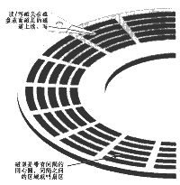
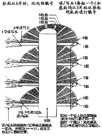

当磁盘旋转时，磁头若保持在一个位置上，则每个磁头都会在磁盘表面划出一个圆形轨迹，这些圆形轨迹就叫做磁道。图1是一张磁盘片与一个磁头的放大图(图中夸张地放大了磁头相对于磁盘的尺寸，因此，也放大了磁道的宽度)。这些磁道用肉眼是根本看不到的，因为它们仅是盘面上以特殊方式磁化了的一些磁化区，磁盘上的信息便是沿着这样的轨道存放的。相邻磁道之间并不是紧挨着的，这是因为磁化单元相隔太近时磁性会相互产生影响，同时也为磁头的读写带来困难。一张1.44MB的3.5英寸软盘，一面有80个磁道，而硬盘上的磁道密度则远远大于此值，通常一面有成千上万个磁道。
磁盘上的每个磁道被等分为若干个弧段，这些弧段便是磁盘的扇区，每个扇区可以存放512个字节的信息，磁盘驱动器在向磁盘读取和写入数据时，要以扇区为单位。1.44MB3.5英寸的软盘，每个磁道分为18个扇区。
硬盘通常由重叠的一组盘片构成，每个盘面都被划分为数目相等的磁道，并从外缘的“0”开始编号，从图2这张放大的硬盘结构图我们可以看出，具有相同编号的磁道形成一个圆柱，称之为磁盘的柱面。磁盘的柱面数与一个盘面上的磁道数是相等的。由于每个盘面都有自己的磁头，因此，盘面数等于总的磁头数。所谓硬盘的CHS,即Cylinder（柱面）、Head（磁头）、Sector（扇区），只要知道了硬盘的CHS的数目，即可确定硬盘的容量，硬盘的容量=柱面数×磁头数×扇区数×512B。
(雨翎) |